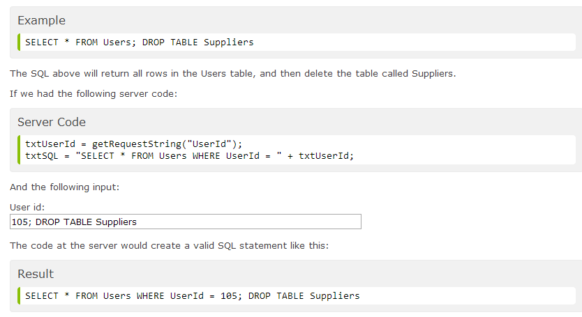

Issues with SQL
SQL Injection
Well! This is something really nasty that I knew nothing about. Just as well my databases don't exist on the web. It turns out that if your database application gets user input from a web form and you haven't taken precautions, then a user with malicious intent, can insert some clever data into that form and do drastic things to your underlying database.
A malicious user might insert (or inject!) data into your form to extract or delete data causing catastrophic damage. The examples given in w3schools.com include the extraction of username and password information

Another example has the malicious user deleting vast quantities of your precious data.
Why is this a problem!
Isn't that obvious! There is a conflict between giving the user flexibility with the choice of username and password and other data access options and openness issues versus the need to be secure and aware of malicious intent. It is very disconcerting to know that a user could enter a value into a dialog box and effectively delete an entire table of data. With good backups this possibly isn't as commercially disasterous as having secure user and password information stolen. Either way it is a very bad look for a database developer to put their clients at such risk. It is also a commercial nightmare for a client company to have such an attack. It could easily put you out of business and ruin your reputation. Not to mention the financial implications were sensitive client data stolen and used by hackers for their own gain.
How to prevent it?
There appears to be some fairly straightforward methods for combatting this kind of malicious attack. According to the www.owasp.org web site:
"It is somewhat shameful that there are so many successful SQL Injection attacks occurring, because it is EXTREMELY simple to avoid SQL Injection vulnerabilities in your code.
SQL Injection flaws are introduced when software developers create dynamic database queries that include user supplied input. To avoid SQL injection flaws is simple. Developers need to either: a) stop writing dynamic queries; and/or b) prevent user supplied input which contains malicious SQL from affecting the logic of the executed query."
So preventing SQL injection is easy then! Great
Prepared Statements (Parameterized Queries)
The basic gist of this option is to prepare predefined options for the user rather than leaving everything wide open for them to dynamically enter. I think basically this means limit the user entered data to a particular variable and then pass the variable into a predefined SQL string to complete the query. So if you needed the user to enter a customer name for example, you would get them to enter their choice into a variable like custname and then pass just that piece of data to a SQL string that was just expecting that one piece of data in the specific place where the customer name is required. Thus preventing additional code from having any meaning to the SQL query.
Stored Procedures
The alternative seems to be to use stored procedures. This option seems very similar, in that you prepare an SQL string and pass in a variable, the difference is that the stored procedure resides in the database itself. The advantage of the previous option is that the code is database independent unlike stored procedures. There are also a few finer points with stored procedures that need to be taken into account when implementing this option.